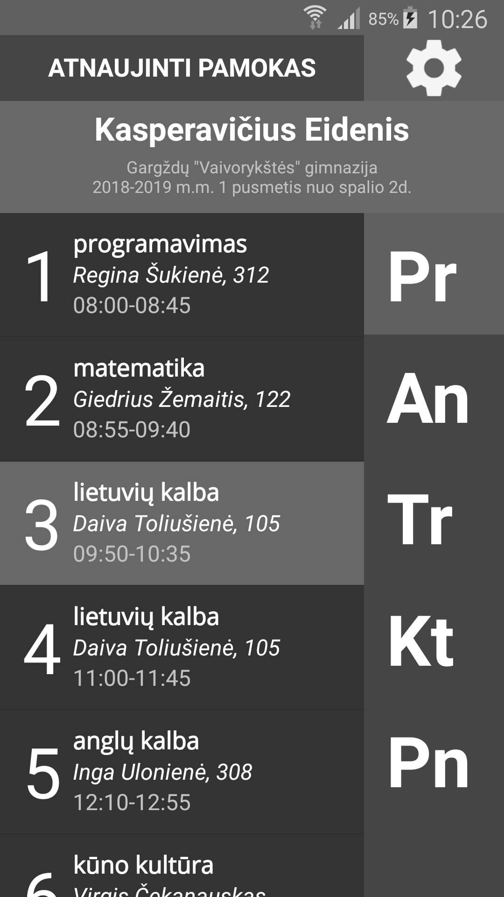
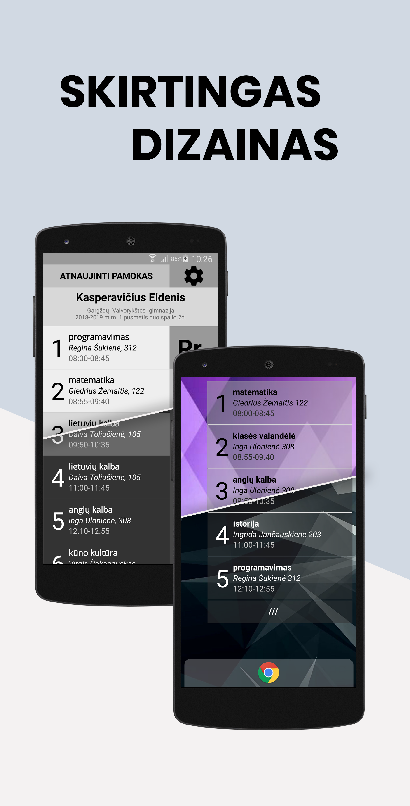
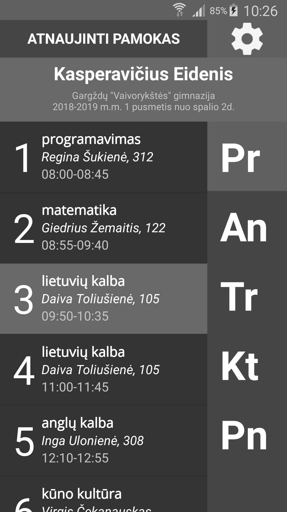
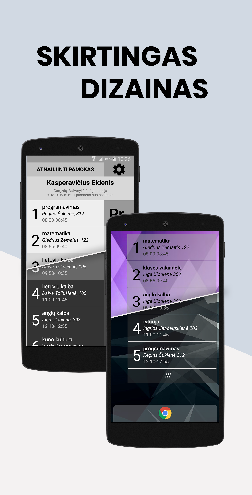

KODĖL NAUDINGA?
- Nebereikia nešiotis suplyšusio tvarkaraščio lapo ar ranka perrašinėti pamokų
- pamokos atnaujinamos automatiškai
- Galimybė vieno mygtuko paspaudimu peržiūrėti tvarkaraštį - nereikia
valandą ieškoti savo vardo netvarkingame tinklalapyje
- Widget („valdiklis“): vienos dienos pamokos pradiniame telefono
ekrane - dar lengviau pasiekiama
- Patikimumas - neturint interneto ryšio arba neveikiant mokyklos
tinklalapiui galima pasižiūrėti išsaugotą tvarkaraštį
- Pranešimai (notifications) apie dabartinę ir kitą pamokas
- Tamsi ir šviesi programėlės spalvų temos (keičiama ir widget'o tema)
Nepasitikite, nenorite įrašinėti keistų programų į savo telefoną?
Ir nereikia. Dėl „aštuntojo pasaulio stebuklo” - „open source software”
- galite patys pasižiūrėti, ką programa veiks jūsų
telefone - prie kiekvieno parsisiuntimo yra programos kodo parsisiuntimas.
Programa kurta asmeninėms reikmėms, todėl funkcijos ir nustatymai gali
atrodyti labai 'specifiniai'
PARSISIUNTIMAI (viso: NaN)
v1.5.1 (
Parsisiuntimų: NaN
)
Nustatymuose galima įjungti 'lango' pradžios ir pabaigos laiko rodymą

SENESNI ↓
v1.5 (
Parsisiuntimų: NaN
)
Panaikintas mokytojo(-ų) laukelis prie pamokų (pasikeitė mokyklos svetainė)
Pataisyta (tikiuosi) juodos programos piktogramos klaida
Paspaudus ant pamokos atsidaro jos puslapis internete (klasės draugai, mokytojai, kabinetai...)
Paspaudus ir palaikius ant pamokos sukuriamas įvykis kalendoriaus programėlėje
Klaidų taisymai ir optimizacija
v1.4.1 (
Parsisiuntimų: NaN
)
Nebūtinas atnaujinimas: pagrindinė versija vis dar v1.4
Sutvarkyta klaida nuskaitant, kai tvarkaraštyje "išbraukta" diena (mokytojų tvarkaraščiuose)
Klaidų taisymai...
Siųstis
kodas
v1.4.1 (
Parsisiuntimų: NaN
)
Įvyko klaida įkeliant atnaujinimą į svetainę (įkelta nepataisyta programos versija), šią versiją atitinka viršuje esantis atnaujinimas.
Siųstis
kodas
SENESNI ↓
v1.4 (
Parsisiuntimų: NaN
)
SVARBUS ATNAUJINIMAS: sensenės programos versijos nebesiunčia tvarkaraščio!
Įdėtas automatinis tvarkaraščio nuorodos gavimas
Pakeista "išsaugotų mokinių" sistema
Pridėti mokytojai ir kabinetai
Nebereikia perjungti tarp I-II ir III-IV klasių
Pataisyta klaida, kai programa crash'ina kraunant tvarkaraštį iš atminties
Pamokos pavadinimo 'apkarpymas' pašalins ir lygį (A, B) bei srautą (7 srautas)
Siųstis
kodas
v1.3 (
Parsisiuntimų: NaN
)
Atskirti tamsaus ir šviesaus stiliaus widget'ai
Permatomas widget'o fonas
Klaidų taisymai...
Siųstis
kodas
v1.2 (
Parsisiuntimų: NaN
)
Pirmoji programos versija, paskelbta internete!
Siųstis
kodas
 



{kind=link}